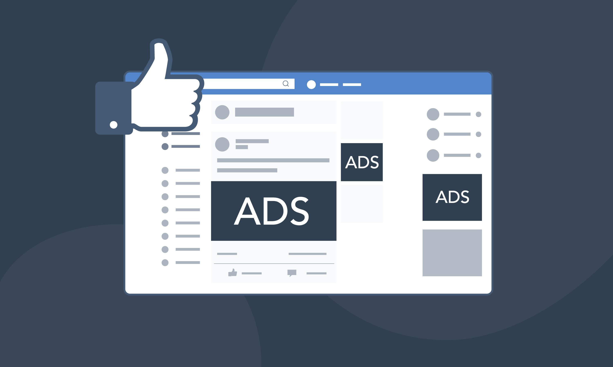
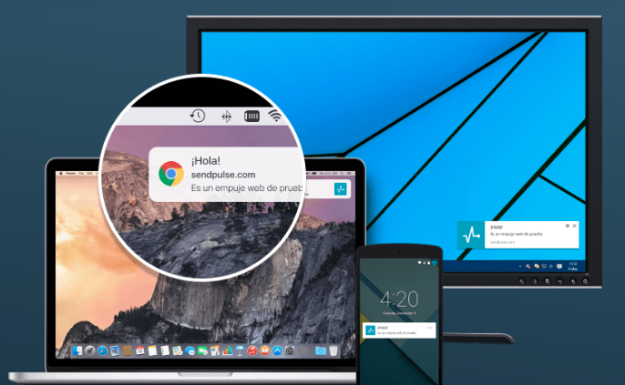
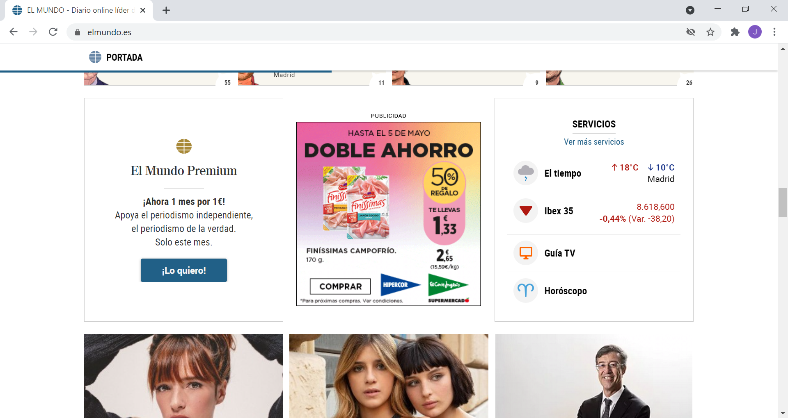

Programación de Aplicaciones Telemáticas
Tema 12: Marketing Digital
Agenda
- Introducción MD
- Redes sociales(SMM, SMO)
- Permission Marketing: Email marketing y push
- Redes Display
- Marketing de afiliación
- Marketing en buscadores: SEM
- Marketing en buscadores: SEO
- Analítica web
- Retención de usuarios, gamificación y otras técnicas
Introducción ¿que es el MD?
El marketing digital o marketing online es el tipo de marketing que utiliza internet como medio de difusión, en contraposición a este se ha venido utilizando el término marketing offline que es el que utiliza todos los otros tipos de medios de difusión distintos a Internet, también conocidos como "medios tradicionales" (TV, radio, periódicos físicos, publicidad a pie de calle, venta telefónica, marketing postal etc)
Tipos de Marketing digital
- Marketing de Buscadores (SEM, SEO)
- Marketing en redes sociales (SMM, SMO)
- Marketing de contenidos
- Permission Marketing (email marketing, push, whatsapp, otros canales)
- Marketing de afiliación
- Otros: inbound marketing, marketing movil, blender marketing....
SMM (Social Media Marketing)
Son todas las estrategias que se realizan dentro de las redes sociales así como también en foros, blogs o cualquier tipo de medio social online para promover nuestra marca y/o contenidos, conseguir clientes o usuarios y para usar estas plataformas como medio de interacción y comunicación.
SMM (Social Media Marketing)
- Difusión de contenidos (e imagen de marca): Contenidos virales, Marketing emocional, atracción de seguidores para posterior difusión de contenidos, influencers...
- Interacción con los usuarios: resolver dudas, obtener información de sus necesidades e inquietudes así como información valiosa sobre nuestro producto o marca.
SMM - Campañas de pago
- Plataformas de promoción propietarias para las redes principales: Facebook ads/instagram, twitter ads, linkedin, youtube (adwords)....
- Distintas modalidades (cpc, cpm, lead interno, lead o conversión externa)
- Gran capacidad de sectorización/personalización: Por edad, sexo, localización, intereses, uso de IA: lookalike.
SMM - Campañas de pago
imagen: contenttu.com
SMO (Social Media Optimization)
El SMO son un conjunto de estrategias que se utilizan dentro de nuestra web o app para conseguir que nuestros contenidos se compartan en redes sociales, foros, blogs etc.
SMO (Social Media Optimization)
- Crear contenido de calidad y viralizable
- Hacer fácil el compartir: por ejemplo a través de botones sociales fácilmente localizables en la web o app.
- Recompensar por compartir
- Adaptar el contenido a otros formatos: presentaciones, videos etc
- Uso de widgets o plugins: compartir cita, botón enviar, últimos posts/twitts...
Permission Marketing
Marketing de comunicación directa con el usuario en base a los datos y/o permisos proporcionados por este.
Email Marketing
- Envíos de emails con publicidad o contenidos solicitados o permitidos por el usuario
- Aspectos a tener en cuenta: periodicidad, mensaje, formato del email (responsive), servidores y listas de spam
- Es muy recomendable usar algún tipo de aplicación de tercero para ahorrar trabajo y evitar distintos tipos de problemas: mailchimp, mailrelay, infusionsoft, mdirector... (existen muchas opciones muchas de ellas con versiones gratuita hasta x suscriptores o similares)
Notificaciones Push
imagen: kinsta.com
Notificaciones Push
- El usuario acepta recibir este tipo de comunicaciones o bien en alguna web (con lo que las recibirá en el navegador donde la aceptó) o bien al instalar una app en su dispositivo móvil
- Modo de envío de información muy directo.
Notificaciones Push
imagen: sendpulse.com
Notificaciones Push
- Distintos formatos (móvil y web con tamaños de imagen y longitud máxima de textos predeterminados)
- Al igual que con el email marketing podemos hacerlo todo nosotros o usar herramientas de terceros que ahorran tiempo y trabajo; ejm: onesignal, notificare, truepush entre otros muchos la mayoría de ellos con versiones gratuitas hasta x usuarios, x envíos de notificaciones etc.
Publicidad de Display
La publicidad de display es aquella que usa como soporte webs o aplicaciones para mostrar todo tipo de anuncios conocidos generalmente como banners bien en forma de imagen o una combinación de texto y imagen, audio, video u otros formatos interactivos.
Publicidad de Display
Evolución
En poco más de 20 años la publicidad de display ha evolucionado desde la compra manual de espacios publicitarios directamente en contacto con el soporte/publisher, pasando por usar adservers, hasta utilizar redes de display cada vez mas grandes y plataformas cada vez mas complejas en la actualidad (google ads, doubleclick, fb ads, DBM, MediaMath, Trade Desk....) que permiten por ejemplo marketing contextual o remarketing de productos entre otras muchas funcionalidades.
Remarketing
El remarketing es un sistema que nos permite reimpactar a usuarios que previamente visitaron nuestra web haciendolo de modo personalizado, atendiendo a lo que buscó o mostró interes en nuestra web.
Programática
Es un proceso automático de compra de publicidad usando RTB (Real Time Bidding) consiste en un método de compra de publicidad online en tiempo real (milésimas de segundo) a través de pujas entre distintos anunciantes por un mismo espacio publicitario entre otras técnicas, las campañas que se realizan van orientadas a perfiles de usuarios concretos (filtrado).
Red de display de google
Es na opcion dentro de la plataforma publicitaria google ads (antes llamada adwords), es la red de display mas utilizada por pequeños y medianos anunciantes. Recomendable para estrategias de imagen de marca a compaginar con la publicidad en el propio buscador.
Popups, popunders...
Existen muchos otros tipos de publicidad mucho menos usados sobre todo por grandes anunciantes debido a su intrusismo frente al usuario, ejemplos son los popups o popunders que se lanzan al visitar determinados sitios web o las notificaciones push de terceros.
Marketing de afiliación
El marketing de afiliación es aquel que atrae clientes o prospectos a través de un sistema de recomendación o referidos. En el marketing online desde webs o apps, RRSS, campañas de email mktg, push, etc.
- Afiliado/publisher:Propietario de una o varias web o app (soportes) que se inscribe en una red de afiliados para promocionar los productos de uno o varios anunciantes en su(s) soporte(s).
- Anunciante: quien gestiona su propia red de afiliación o se inscribe en una plataforma/red de afiliación para promocionar sus productos.
Marketing de afiliación
imagen: justlearnwp.com
Marketing de afiliación
- Se paga a los soportes que envíen esos referidos una comisión fija o variable.
- Tipos de comisiones; PPC/CPC (pago por click), PPL/CPL (pago por lead/registro), PPA/CPA (pago por acción; normalmente venta, fija o %), otros: PPV /CPM (pay per view), PPI/CPI (pay per installation)
- Requiere de sistemas de trackeo del usuario (normalmente con cookies, postclick hasta X diás)
Marketing de Afiliación
Modelos pagos/comisiones publicidad online
imagen: antevenio.com
Marketing de afiliación
Software y redes de afiliación
- 1. Gestión propia: 1.1 software propio o 1.2 software de terceros para afiliación tipo SAAS: tune (hasoffers), affise, fuseclick o instalables: Post Aff pro... Programas de afiliados de gestión propia más conocidos: amazon affiliates, aliexpress aff, etc...
- 2. Redes de afiliación: gestión de multiples programas y redes de soportes/webs/publishers en un único lugar: tradedoubler, cj, zanox...
Marketing de Afiliación
Ejemplo soporte programa afiliados amazón
Marketing de Afiliación
Redes/plataformas de afiliación
imagen: samueldiosdado.com
Marketing en buscadores: SEM
El SEM o Search engine marketing es aquel que nos permite anunciarnos en los buscadores.
- Se crean anuncios para las búsquedas o palabras clave usadas en las búsquedas de los usuarios
- Plataformas propietarias; google ads, bing ads, yahoo advertising...
Marketing en buscadores: SEM
Marketing en buscadores: SEO
El posicionamiento SEO o Search Engine Optimization, son un conjunto de estrategias y técnicas de marketing orientadas a lograr la mejor posición dentro de las páginas de resultados de los motores de búsqueda (google, bing, yahoo, duckduckgo...).
SEO
- SEO on-page
- SEO off-page
SEO
SEO on-page
El SEO on-page son el conjunto de técnicas que se aplican en la página web que queremos posicionar (tanto en html como en configuraciones del servidor).
- Metatags: title, description y otras etiquetas HTML (H1, H2, H3, alt img…)
- Mejora de la velocidad (en la web, sistemas de cacheo y compresión, cdns)
- Optimización de imágenes: compresión previa y de servidor.
SEO
SEO on-page
- sitemap.xml, robots.txt, htaccess (o similares; como web.config para .net )
- Contenido de calidad (content is king)
- Correcta estructuración de la web: árbol de enlaces, menú, breadcrumbs etc
- Buena experiencia de usuario web
- Google: mobile first (web responsive o con versión movil)
- longtail
SEO
SEO off-page
El SEO off-page es aquel que realizamos fuera de nuestra web para ayudar también a mejorar la posición de nuestra página en los motores de búsqueda.
- Link Building: intercambio de enlaces, PBNs, compra de enlaces, registro en directorios, foros, perfiles en webs etc
- Menciones en redes sociales
SEO
SEO off-page
- Guest blogging, periódicos (prensarank, prensalink, unancor), notas de prensa (iberianpress, mediaenvio)
- Dominios con antigüedad o historial (y enlaces), redirecciones 301...
- Dominios con keywords genéricas: hoteles.com, seguros.es etc
SEO
Herramientas
Existen multitud de herramientas que pueden ayudarnos a la toma de decisiones sobre que acciones SEO (y SEM) tomar y pueden servirnos desde identificar acciones de la competencia (contenido, estrategias de linkbuilding) hasta identificar longtail de palabras clave.
SEO
Herramientas
- Gratuitas keywurds: keyword tool google, Ubersuggest
- Herramientas comerciales: Semrush, ahrefs, majesticseo (identificación de backlinks)
- Identificación de dominios eliminados: Xenu, expireddomains.net
Estrategias principales SEO
Se deben focalizar los trabajos en estos puntos principales:
- 1. Elección de dominio: dominio con palabra clave en el mismo y/o dominio con antiguedad/backlinks.
- 2. Estudio de palabras clave y definición de las principales para generar contenido (páginas internas)
Estrategias principales SEO
- Por cada página (Principal e internas):
- 3. Metatags (title y descriptión, agregarles iconos)
- 4. Contenido (texto) incluyendo en el texto las keywords relacionadas a la keyword principal, incluyendo etiquetas h1, h2, h3, b y ul siempre que sea posible. (las listas ul google suele colocarlas en Rank#0)
- 5. Incluir algún rich snippet como el de valoraciones o reseñas (Schema.org)
Recomendación estratégias SEO
Como recomendación podríamos crear varias páginas distintas, el mismo diseño puede valer pero con distinto contenido, teniendo en cuenta las estrategias definidas en la sección anterior, la idea final es crear 4 o 5 webs (mismo diseño) con distinto texto para la home y 4 o 5 páginas internas con orientaciones de kw distintas y pasados de 3 a 6 meses observar cual es la que mejor se a posicionado para incluir ahi todo el contenido (redirecciones 301) focalizarse en ella.
Analítica Web
La analítica web nos ayuda mediante distintos tipos de herramientas a extraer conclusiones de acciones pasadas y poder tomar decisiones sobre posibles acciones futuras.
Analítica Web

Analítica Web

Analítica Web
Funcionalidades:
- Filtros
- Visión en tiempo Real
- Objetivos (cpa, cpl, cpc)
- Anotaciones(anotar acciones de marketing o cambios en la web; cuando se hizo un cambio SEO, cuando se empezó una campaña etc)
Analitica Web
Funcionalidades:
- Eventos
- Datos geolocalizados y perfiles
- Integración con Search Console, adwords, otras herramientas de tracking o afiliación etc
Otras técnicas
Existen otros tipos de técnicas de marketing tanto para atraer tráfico de modo "inusual" (guerrilla) como para retener clientes y usuarios.
Marketing de Guerrilla
Son todas las acciones de marketing que se salen de lo "usual" dentro del marketing online podemos aplicarlo a todas las disciplinas antes descritas tanto en SSM como SEM, SEO, afiliación o display.
Retención de usuarios
Las técnicas de retención de usuarios son de vital importancia ya que una vez que hemos sido capaces de atraer a los usuarios a nuestra web o app hemos de ser capaces de retenerlos o buscar la recurencia de los mismos en base a nuestros objetivos. Una de estas técnicas de retención de usuarios es por ejemplo la gamificación.
Retención de usuarios: Gamificación
La gamificación son un conjunto de técnicas que aplican la mecánica de juegos a nuestra aplicación o web para lograr una mayor interacción con la misma a través de estrategias de fidelización como pueden ser: programas de puntos, retos, premios...
- Aumento de la fidelidad del cliente o usuario
- Aumento del reconocimiento de marca
- Sentimiento de comunidad
Retención de usuarios: Gamificación
- Diferenciación de la competencia
- Aumento de recopilación de datos
- Aumento de ventas o acciones dentro de la app
- Aumenta la recurrencia y tiempos de estancia en la app
Retención de usuarios: exit popup, postback y otras técnicas de abandono
Se trata de técnicas que nos permiten retener a un usuario previa detección de la intención de abandonar nuestra web o app.
- Exit popup: cuando el usuario trata de abandonar la web se le muestra un mensaje en forma de "popup" que le llama a la acción (con algun tipo de oferta, información interesante, producto relacionado etc)
Retención de usuarios: exit popup, postback y otras técnicas de abandono
- postback: mediante javascript y otros lenguajes podemos lograr mostrar a un usuario el contenido que queramos cuando este de a el botón "volver" de cualquier navegador (puede ser un exitpopup, una landing page, la home de nuestra web, una página de oferta o información relacionada a la navegación del usuario....)
Retención de usuarios: exit popup, postback y otras técnicas de abandono
- Existen otras técnicas de retención de usuarios como el uso de espacios publicitarios para campañas propias, recordatorios y llamadas a la acción periódicas dentro de la web cuando un usuario navega (ejemplo: hay x usuarios viendo este anuncio o x usuarios compraron hoy este producto, solo quedan 2 unidades de este producto en stock...)
Retención de usuarios: otros tipos de reimpacto
Podemos usar distintas técnicas de envío de recordatorios a nuestros usuarios, bien con información o productos relacionados a búsquedas realizadas o compras previas o bien con recordatorios de acciones no terminadas en nuestra web o app como que se tienen determinados productos en el carro de la compra, o como que no se ha terminado de realizar una determinada acción para esto pueden usarse canales como el email, notificaciones push, o mensajes dentro de la propia web.